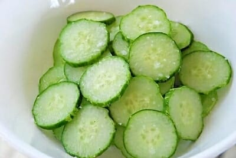
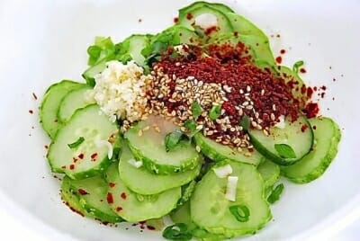
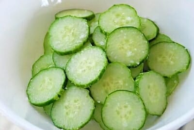
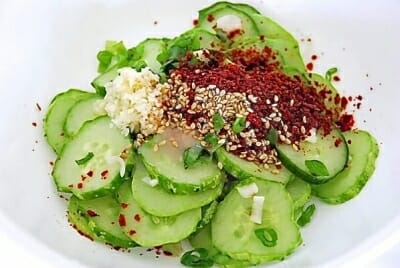

Korean Cucumber Salad
Over the next few weeks, you will be designing and building a web page that presents a
recipe. We'll start that
project by finding/choosing a recipe, and doing some design research. This week, you will upload an HTML
document that presents the following:
I would like to explore this recipe: Oi Muchim: Spicy Korean Cucumber
Salad
Title: How to make Korean Cucumber Salad
Description: Oi Muchim is a spicy cucumber salad. Oi means cucumber, and muchim means mixed with seasonings.
It’s a simple vegan side dish (banchan) you can make with any crunchy cucumbers, such as Korean cucumbers,
pickling
cucumbers (aka Kirby), Persian, English, Japanese cucumbers, etc. It’s delicious with any Korean meal and can be
a quick kimchi substitute.
Prep Time: 20 mins
Allergens: Sesame
Ingredients:
- 1 Korean cucumber
- 1 teaspoon salt
- 1 tablespoon Korean red chili pepper flakes
- 1 tablespoon chopped scallion
- 1/2 teaspoon garlic minced
- 1 teaspoon vinegar
- 1/2 teaspoon sugar
- 1 teaspoon sesame seeds
- 1 teaspoon sesame oil
Instructions:
- Thinly slice the cucumber (1/8 to 1/4-inch thick).
- Toss gently with salt and set aside for
about 15 minutes. This will let the excess water be drawm out of the cucumbers.
- Drain excess liquid. Avoid squeezing them because they will bruise. Mix well with all of the remaining
ingredients. Taste a little and adjust the seasonings if necessary.
- Store and use in any dish to add a fresh, crunchy kick!
- Extra storage instructions: Use a glass container for easy cleaning.
Sample imagery (this may or may not be actual images from your recipe source, it might
instead be samples of
photos/illustrations representing the type of images you intend to use)
 



Three links to recipe websites you have found, with a short (2-3 sentences) written
review/critique for each,
explaining what makes this site a good reference
- Koreanbapsang Recipe
Website:
One aspect of recipe websites that I often dislike is the fact that they don't have the ingredients at the
top of the page. You often have to scroll all the way down to see which ingredients are needed to make the
dish,
when that is often the first thing that people look for. One thing that I like about this recipe page is
that it
is very concise and easy to understand.
- Epicurious:
Epicurious is a one stop shop for various different recipes. I find that the use of bold, clear imagery,
along with easy to understand hierarchy, makes this site easy to understand and digest visually. Individual
recipe
pages within this site are well made, with clear and easy to understand instructions, along with detailed
ingredient lists that are easy to find.
- Martha Stewart:
Martha Stewart's website has an array of recipes, along with other tips and news from martha. One aspect of
this page that I really enjoy is that there are little tip boxes, which have valuable information within
them. I
find that this styling is really nice for hierarchy and bringing out important information, as recipes often
have
important sections that should not be missed!
Three links to non-recipe websites with stylistic or communication techniques that might
inform your own design,
also with a short written rationale
-
Kinetic Labs: Custom
Keyboard Building Guide:
A while ago I was interested in mechanical keyboards, eventually buying my own and trying to figure out to
make
it. What I like about this page is that it is able to break down a complex topic down into smaller and
digestable pockets of information. In particular, I enjoy the image and caption pairing, which helps to
teach
something visually.
- WikiHow: How to be a good college student:
There have been many times when a quick search on a wikihow page has saved me when I was in a pickle. What
works
so well with a wikihow page is how easy it is to pick out the advice. You can see numbered lists that are
clearly larger and bold, and smaller detail text in every page. There is a good pairing of images and
captions,
and there tends to be good summarization of the entire page. While it may not be the most detailed
information,
it gives a good balance of quick, concise answers.
- RXBAR Website:
I really love how simple the RX bar website is. The color blocking, large headings, all work really well.
One
aspect that I really love about this site is how they incorporate images into the design. I really love how
the
site is able to portray foods such as eggs, cashews, and almonds, on a white background without en enclosing
box. It gives the site a modern, clean look, that adds to the brand image.
- Research
Evaluation Google Doc